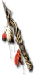

Carin Shard
Petrified Wand
Damage: 8-24
Required Level: 35
+X to Life (X = 1.25 x character level)
+10% Faster Cast Rate
+X to Mana (X = 1.25 x character level)
+30% Faster Hit Recovery
Replenish +5 Life per 10 Seconds
+1 to Necromancer Skill Levels
+2 to Summoning Skills
Unique Wand
Carin Shard
- Type
- Wand
- Base
- Petrified Wand
- Tier
- Exceptional
- Required level
- 35
- Item level
- 25
- Required strength
- 25
- Max sockets
- 2